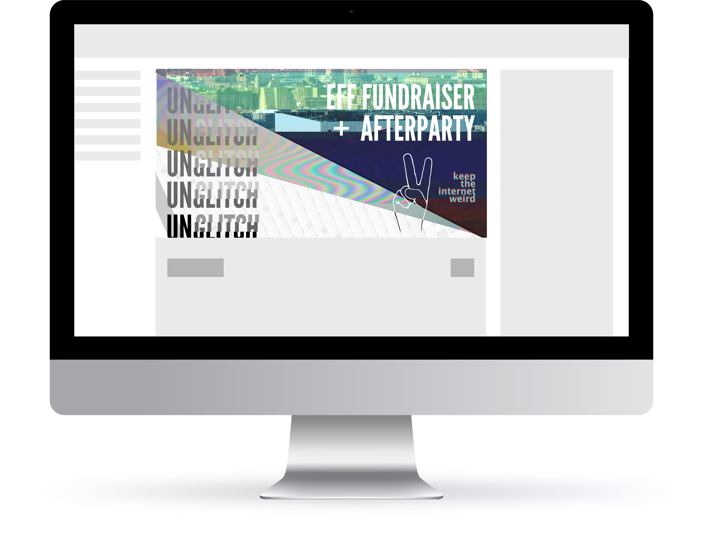
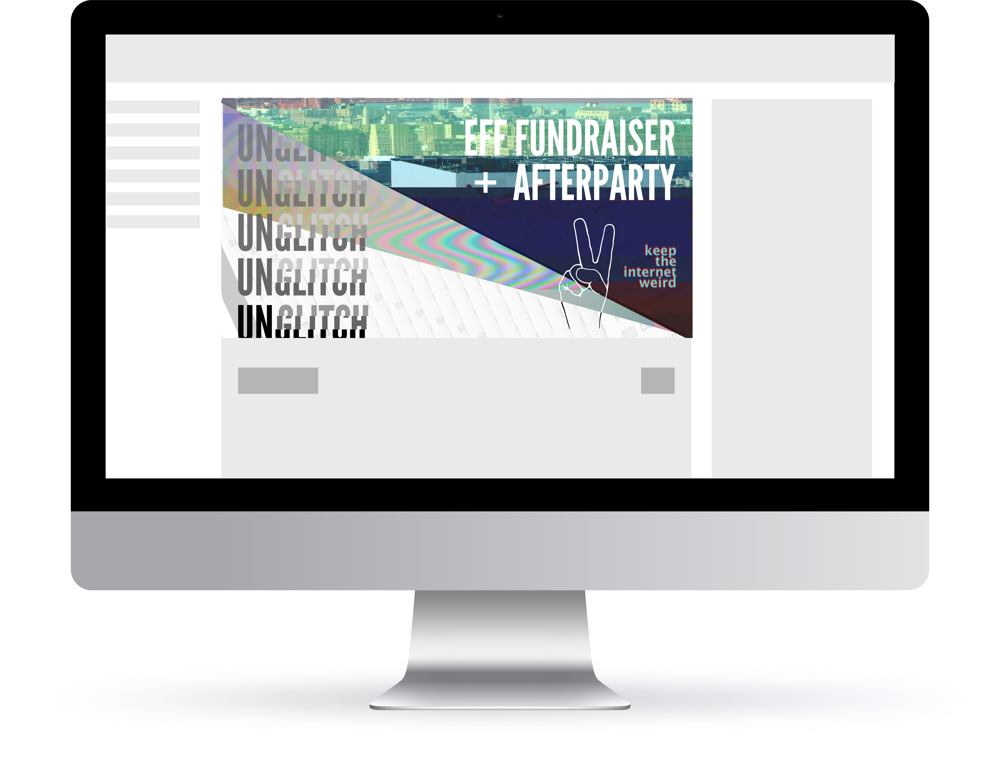

unglitch
art-technology activism
Unglitch is an art-tech activist organization I work with that is currently focusing on net neutrality education and outreach initiatives in New York City.
As one of the founders and primary organizer, I helped develop all the objectives and visual identity to secure locations and sponsorships for a alternative networks panel, an all-day hackathon at fat cat fab labs and an afterparty at babycastles.

 
